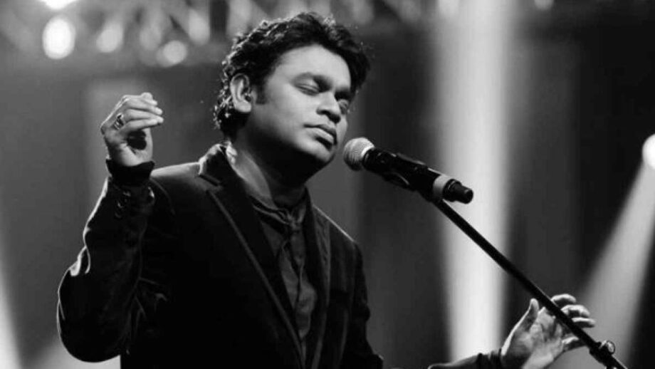

The Music Maestro - Allah Rakha Rahman
The Mozart of Madras , as he is fondly called , AR Rahman has played a pivotal role in shaping the Indian Music Industry . From delivering chartbuster hits in all Indian Languages to making India proud Internationally , Rahman sir has done it all. He's won the Oscars twice , he's a SIX TIME National Film Award winner. He's an emotion for all his fans and his humble nature inspires us to the core. He is especially loved for all his compositions in Mani Ratnam Films like Roja , Saathiya , Dil Se, Bombay and so many more!!! Here are some of my most favourite songs by the legend<3
|
|